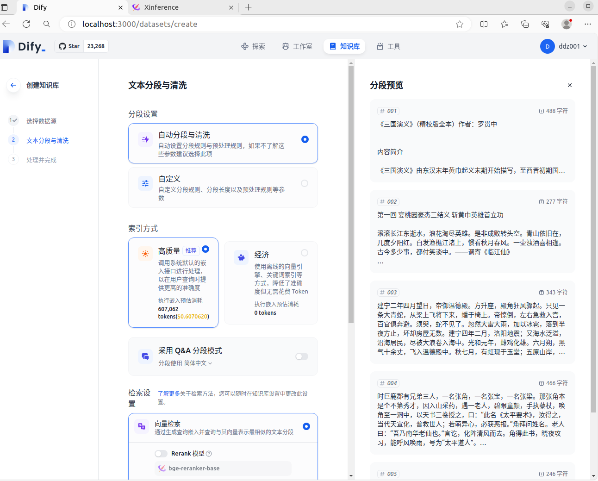

官网：Dify.AI · The Innovation Engine for Generative AI Applications
Github官网：GitHub - langgenius/dify
官网介绍：Dify 是一个开源的LLM应用开发平台。其直观的界面结合了AI工作流程、RAG管道、代理功能、模型管理、可观察性功能等，让您可以快速从原型到生产。
运行环境：Ubuntu 22.04 + Intel® Core™ i5-6600K CPU @ 3.50GHz × 4 + RAM（16GB）
依赖安装：PostgresSQL / Redis / Weaviate 均是本地安装
部署方式：本地源码启动
dify关系真够复杂的，为了弄他一个，还得额外搞三个……如何部署，您可以参考下面的链接
dify支持很多模型提供商，这里选用
2024-04-19下载的版本是
这里包括准备环境变量、秘钥、创建并激活虚拟环境、安装依赖等
# 进入 api 目录
cd api
# 获取 .env 文件
cp .env.example .env
# 利用下面的命令获取 key，得到的字符串赋值给 .env 文件中的 SECRET_KEY
openssl rand -base64 42
# 创建虚拟环境并激活
python3 -m venv venv
source ./venv/bin/activate
# 安装依赖
pip install -r requirements.txt
pip install torch
# 数据库迁移
# 说明：api/migrations 这个目录应该就是和PostgreSQL数据库相关，会创建表等工作
flask db upgrade
得到
2024-06-21
记得之前某个版本中安装依赖之后，程序启动时会出错。
这里是
# 进入 web 目录
cd web
# 获取 .env 文件
cp .env.example .env
# 安装依赖包
npm install
# 构建代码
npm run build
启动项目，这里介绍两种方式：
他的优势就是需要修改的地方不多，api和web两个目录的
# 进入 api 目录，并激活虚拟环境
flask run --host 0.0.0.0 --port=5001 --debug
# 再打开一个新的终端，进入 api 目录，并激活虚拟环境
celery -A app.celery worker -P gevent -c 1 -Q dataset,generation,mail --loglevel INFO
# 再打开一个新的终端，进入 web 目录
npm run start --host=0.0.0.0 --port=3000
终于弄完了，赶紧试试吧！初次进入和再次进入界面有所不同，初次会强制要求设置管理员账户，如下图：
设置管理员账户之后便会跳转到登录页面，登录之后如下图：
页面右上角点击“头像用户名称”-》下拉菜单中点击“设置”-》弹窗中点击“模型供应商”-》选择并添加你的“模型供应商”
jina 官网：Jina AI - Your Search Foundation, Supercharged.，进去看看，说不定有惊喜呢
添加模型供应商之后，你就可以设置系统模型了，例如，Embedding 模型和Rerank 模型这里选择的是
在测试知识库的时候，“文本分段与清洗”环节发现一个问题：针对同一个文档，在分别使用 Xorbits Inference 或者 Jina 的 相同 Embedding 模型时（选用的是 jina-embeddings-v2-base-zh），得到的结果不一样，看一下截图：
下图是 Xorbits Inference 的 Embedding 模型
下图是 Jina 的 Embedding 模型

下面在看一下文档的截图：
查了一下出现这种现象的原因，这里记录一下。先梳理一下API（前端请求地址：
问题就出在该方法中的
再看一下获取拆分器截图，下图中可以看到模型实例调用
下图是 Xorbits Inference 中 Embedding 模型的计算方法
下图是 Jina 中 Embedding 模型的计算方法
最后在模拟一下他们是如何计算的
import sys
sys.path.append(".")
texts = ["","",""]
print("---------------------------------- 下面是 Jina/jina-embeddings-v2-base-zh 的计算结果")
from transformers import AutoTokenizer
gpt2_tokenizer_path = "E:\\llm\\dify-0.x.x\\api\\core\\model_runtime\\model_providers\\jina\\text_embedding\\tokenizer"
tokenizer = AutoTokenizer.from_pretrained(gpt2_tokenizer_path)
for text in texts:
tokens = tokenizer.encode(text)
num_tokens = len(tokens)
print(num_tokens)
print("---------------------------------- 下面是 Xorbits Inference/jina-embeddings-v2-base-zh 的计算结果")
from core.model_runtime.model_providers.__base.tokenizers.gpt2_tokenzier import GPT2Tokenizer
for text in texts:
print(GPT2Tokenizer.get_num_tokens(text))
正常情况下应该都需要其他电脑访问，这里才是重点
开始只是修改了
构建结束之后，就可以启动了，命令是
换另外一台电脑访问试试，可以访问没有问题，但是还是发现了点小问题，改的不够彻底啊，如下图：
要想IP地址访问，需要修改
上图中的
修改完之后重新启动一下，如下：
# 为了方便使用
source ./venv/bin/activate
# 进入 api 目录，并激活虚拟环境
flask run --host 0.0.0.0 --port=5001 --debug
# 【视情况而定】再打开一个新的终端，进入 api 目录，并激活虚拟环境
celery -A app.celery worker -P gevent -c 1 -Q dataset,generation,mail --loglevel INFO
修改完之后
# 进入 web 目录
# 构建代码
npm run build
# IP地址启动
npm run start --host=192.168.13.175 --port=3000
之后在访问就没有问题了，如下图：
2024-04-29我们老大发现的问题，如下图：
顺着给出的错误信息一路搜索，发现是
想着再部署一下就行了呗，结果发现这个项目没有开源，也不知道啥时候开源（ Will dify-sandbox be open source? ）。废了半天劲儿，终于在没有使用 docker 的情况下部署成功了。结果在这儿等着我呢，还是得用 docker 啊！！！
复制一下
version: '3'
services:
# The DifySandbox
sandbox:
image: langgenius/dify-sandbox:latest
restart: always
cap_add:
- SYS_ADMIN
environment:
# The DifySandbox configurations
API_KEY: dify-sandbox
GIN_MODE: 'release'
WORKER_TIMEOUT: 15
ports:
- "8194:8194"
之后在该文件所在的目录打开终端，执行
请忽略截图中 dify 版本的问题
如果想要支持 HTTPS，需要做哪些改变呢？
# Console API base URL
CONSOLE_API_URL=https://www.xxx.com:5001
CONSOLE_WEB_URL=https://www.xxx.com:port
# Service API base URL
SERVICE_API_URL=https://www.xxx.com:5001
# Web APP base URL
APP_WEB_URL=https://www.xxx.com:port
NEXT_PUBLIC_API_PREFIX=https://www.xxx.com:5001/console/api
NEXT_PUBLIC_PUBLIC_API_PREFIX=https://www.xxx.com:5001/api
startServer({
dir,
isDev: false,
config: nextConfig,
hostname,
port: currentPort,
allowRetry: false,
keepAliveTimeout,
selfSignedCertificate: {
key: "/home/xxx/llm/ZhengShu/*.key",
cert: "/home/xxx/llm/ZhengShu/*.pem"
}
}).catch((err) => {
console.error(err);
process.exit(1);
});
// 屏蔽下面的代码
if (selfSignedCertificate && !isDev) {
throw new Error("Using a self signed certificate is only supported with `next dev`.");
}
这个没研究好啊！这是弄啥呢？还得改人家
为了能快速启动 dify，弄了一个 dify 脚本，名称为：
#!/bin/bash
# 打开一个新的终端，并指定终端窗口标题
gnome-terminal --title 'dify 项目之 dify-sandbox' --working-directory=/home/ddz/llm/2-code/dify-0.6.0-fix1 -- /bin/bash -c 'cd docker; \
docker compose -f docker-compose.middleware-ddz.yaml -p dify-sandbox up -d'
gnome-terminal --title 'dify 项目之 flask' --working-directory=/home/ddz/llm/2-code/dify-0.6.0-fix1 -- /bin/bash -c 'cd api; \
source ./venv/bin/activate; \
flask run --host 0.0.0.0 --port=5001 --debug'
gnome-terminal --title 'dify 项目之 celery' --working-directory=/home/ddz/llm/2-code/dify-0.6.0-fix1 -- /bin/bash -c 'cd api; \
source ./venv/bin/activate; \
celery -A app.celery worker -P gevent -c 1 -Q dataset,generation,mail --loglevel INFO'
gnome-terminal --title 'dify 项目之 Web' --working-directory=/home/ddz/llm/2-code/dify-0.6.0-fix1 -- /bin/bash -c 'cd web; \
npm run start --host=192.168.13.175 --port=3000'
exit
#!/bin/bash
# 打开一个新的终端，并指定终端窗口标题
gnome-terminal --title 'dify 项目之 dify-sandbox' --working-directory=/home/ddz/llm/2-code/dify-0.6.13 -- /bin/bash -c 'cd docker; \
docker compose -f docker-compose.middleware-ddz.yaml -p dify-sandbox up -d'
gnome-terminal --title 'dify 项目之 flask' --working-directory=/home/ddz/llm/2-code/dify-0.6.13 -- /bin/bash -c 'cd api;
source .venv/bin/activate;\
flask run --host 0.0.0.0 --port=5001 --debug --key /home/xxx/llm/ZhengShu/*.key --cert /home/xxx/llm/ZhengShu/*.pem'
gnome-terminal --title 'dify 项目之 celery' --working-directory=/home/ddz/llm/2-code/dify-0.6.13 -- /bin/bash -c 'cd api;
source .venv/bin/activate;\
celery -A app.celery worker -P gevent -c 1 -Q dataset,generation,mail --loglevel INFO'
gnome-terminal --title 'dify 项目之 Web' --working-directory=/home/ddz/llm/2-code/dify-0.6.13 -- /bin/bash -c 'cd web; \
npm run start --host=192.168.13.175 --port=3000'
exit
0.6.13，发现包管理已经换成了